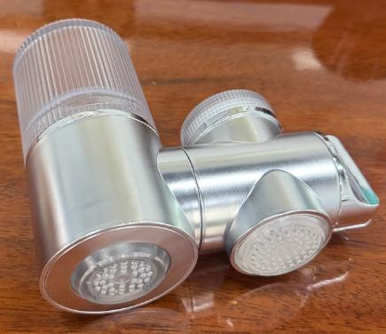
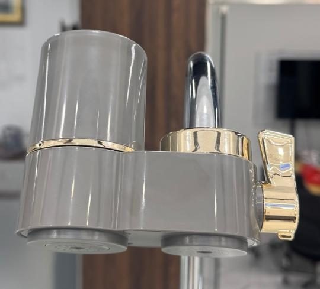
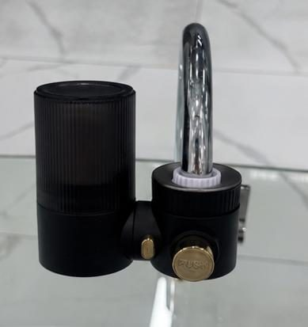

Faucet
FaucetWT-T01
Classic faucet filter
Get a QuoteHome / Products / Faucet Filters / WT-T13

Faucet Filters
360° rotatable faucet filter
WT-T13 — 360° rotatable faucet filter. Key specification: Housing ABS. Specifications are confirmed per model and order.
Represents the WT-T15 variant; adjustment and finish options are confirmed per order.
Voltage / frequency is configurable to the target country. Other configurations are confirmed per order.
8 specification rows from the ROPureOEM catalogue.
| Housing | ABS |
|---|---|
| Cartridge options | Ceramic + GAC / CTO / UF + GAC |
| Adjustment | 360° rotation |
| Water source | Municipal tap water |
| Rated flow / capacity | Confirmed per order |
| Filtration precision | Confirmed per order |
| Pressure / temperature | Confirmed per order |
| Cartridge life / dimensions | Confirmed per order |
Specifications are taken from the ROPureOEM catalogue. Where a value is not yet confirmed, it is listed as “Confirmed per order” — we do not publish unconfirmed figures.
FaucetClassic faucet filter
Get a Quote Faucet
FaucetTurbine LED faucet filter
Get a Quote
Faucet270° rotatable faucet filter
Get a Quote
FaucetCeramic valve-core faucet filter
Get a Quote